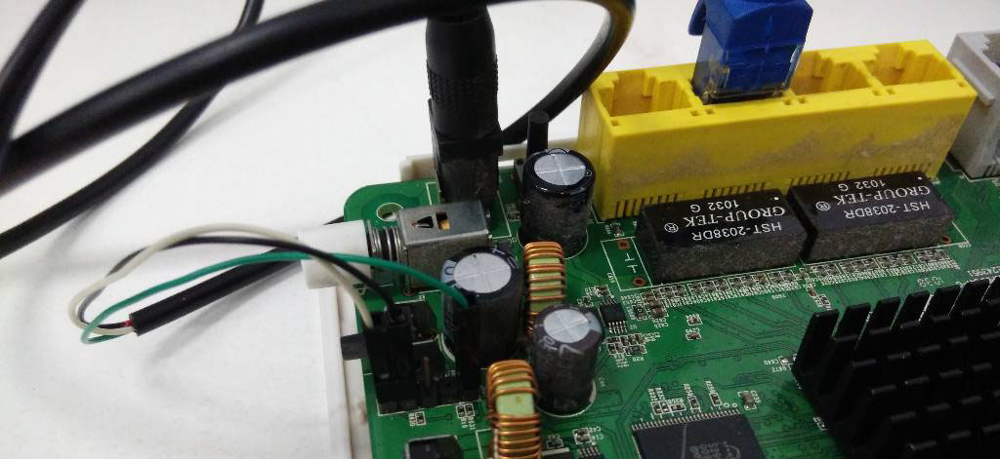
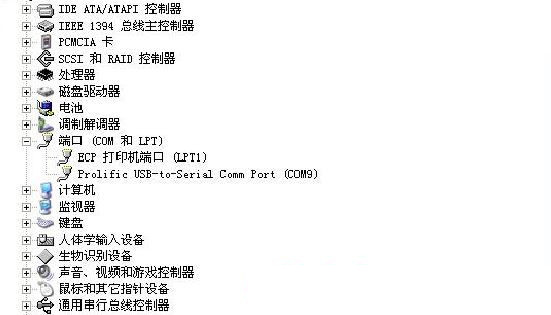
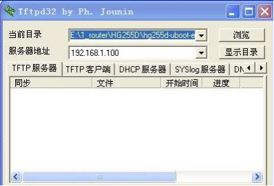
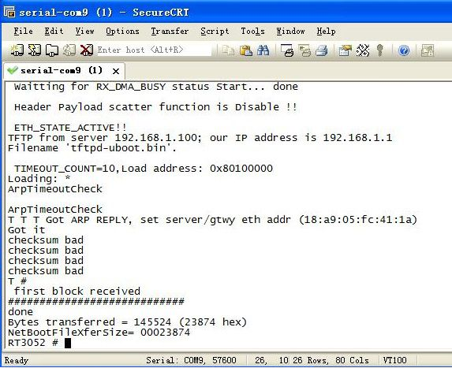
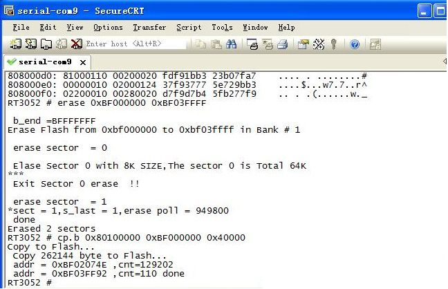
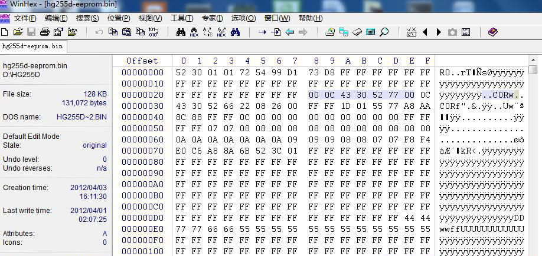
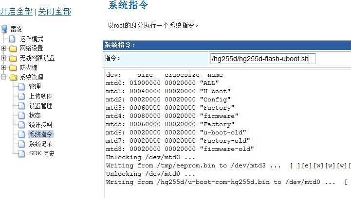
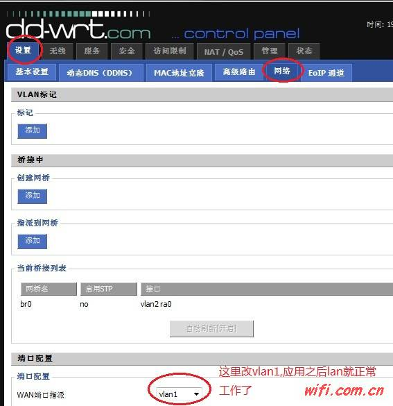

HG255D
无论是电信原版还是已经更换uboot的路由，记得先备份eeprom，eeprom对应factory分区的数据包含mac地址和无线信息，可以这个分区的损坏导致的无线信号比较弱的情况出现。
TTL刷改版uboot
路由器原版u-boot波特率为57600，最新的u-boot波特率为115200，是httpd，不是tftpd。
1、建议看完本教程再动手刷
2、如果是Windows系统，TFTP上传有问题，请看一下是否系统自带的防火墙阻止了。
HG255D TTL插座定义（V+ 为3.3V的电压,千万不能接）
┃ ┃ ┃ ▂ ┃
RX GND V+ NULL TX

一、 用到的东西
- 网线 一条
- USB转TTL线 一条
- Putty终端
- TFTPD32软件及固件
二、 接驳TTL线
路由器PCB板上的RX、GND、TX分别连接到USBTTL（USB转串口）的RX、GND、TX插针上。
三、 电脑预设（笔者用的是XP系统）
将USB转TTL接到电脑上，装好USBTTL驱动，选择正确的COM口（在设备管理器中查看第几个COM口，笔者这里是COM9）。

把电脑的网卡地址改成静态IP地址（笔者设置为192.168.1.100）
Windows下：设置Putty的Serial line为COM3，Linux下：设置Putty的Serial line为ttyUSB0，官方cfe的Speed为57600，不死cfe是115200。
把相关的文件（u-boot、eeprom及Openwrt固件），与tftpd32放在同一文件夹HG255D内，运行tftpd32（什么都不要设置）。
Windows:

Linux:
sudo pip install tftpy
cat > tftpd.py << EOF
import tftpy
server = tftpy.TftpServer('HG255D')
server.listen('0.0.0.0', 69)
EOF
python tftpd.py
四、 开始刷机——刷入u-boot（确保TTL线已经正确接好）
（一）用Putty打开Serial，打开HG255D电源, 当出现
Please choose the operation:
1: Load system code to SDRAM via TFTP.
2: Load system code then write to Flash via TFTP. #该选项刷固件
3: Boot system code via Flash (default).
4: Enter boot command line interface.
9: Load Boot Loader code then write to Flash via TFTP.
（二）马上按4后出现如下（不能按9，按9更新U-boot 100%变砖头——键盘上的数字键4）
4: System Enter Boot Command Line Interface.
U-Boot 1.1.3 (Nov 28 2012 - 12:00:15
Main_loop !!
RT3052 #
RT3052 # help
? - alias for 'help'
base - print or set address offset
bdinfo - print Board Info structure
boot - boot default, i.e., run 'bootcmd'
bootd - boot default, i.e., run 'bootcmd'
bootm - boot application image from memory
bootp - boot image via network using BootP/TFTP protocol
cmp - memory compare
coninfo - print console devices and information
cp - memory copy
crc32 - checksum calculation
echo - echo args to console
erase - erase FLASH memory
flinfo - print FLASH memory information
go - start application at address 'addr'
help - print online help
httpsvr - Start HTTP server to load image
iminfo - print header information for application image
loadb - load binary file over serial line (kermit mode)
loop - infinite loop on address range
loopback - Ralink eth loopback test !!
md - memory display
mdio - Ralink PHY register R/W command !!
mm - memory modify (auto-incrementing)
mtest - simple RAM test
mw - memory write (fill)
nm - memory modify (constant address)
printenv- print environment variables
protect - enable or disable FLASH write protection
rarpboot- boot image via network using RARP/TFTP protocol
reset - Perform RESET of the CPU
run - run commands in an environment variable
saveenv - save environment variables to persistent storage
setenv - set environment variables
sleep - delay execution for some time
spicmd - read/write data from/to eeprom or vtss
tftpboot- boot image via network using TFTP protocol
version - print monitor version
如果不确定什么时候该按4可以接上电源就马上一直按数字键4, Putty可以不需要关。
（三）设置tftp服务的网络地址与上传文件到内存 插好网线到Lan口，输入如下命令：
setenv serverip 192.168.1.100 #回车
tftpboot 0x80100000 tftpd-uboot.bin #回车

（四）也可以等Putty里显示2个Arp Timeout Check插上网线时，把网线插入路由器的LAN口（黄色的接口），随便哪个口都可以。
注意：如果没有提示成功下载到问题，千万不要继续下面的操作。等完全tftp上传好，出现NetBootFileXferSize= 00023874）后 （00023874为tftpd-uboot.bin文件大小的16进制数值，别的U-boot文件的值可能不同）
（五）解锁flash 保护 输入
protect off all #回车
（六）擦除U-BOOT
输入
erase 0xBF000000 0xBF03FFFF #回车
（七）写入U-BOOT
输入
cp.b 0x80100000 0xBF000000 0x40000 #回车

（八）备份EEPROM EEPROM，原意是电可擦可编程只读存储器，一种掉电后数据不丢失的存储芯片。但对于HG255D所说的eeprom，并不是指的这样的芯片,而是指的HG255D的factory信息，这个信息是保存在flash中的。因为更换uboot会改变flash的分区起始位置及大小，所以会导致原厂的factory信息丢失。 不同uboot的EEPROM位置：
0x00FA0000 – 0x00FBFFFF (原厂UBOOT)
0x00060000 – 0x0007FFFF (Lintel UBOOT)
要备份EEPROM信息，必须要搞清楚EEPROM所在的位置。
原厂uboot使用的flash分区如下：
Using physmap partition information
Creating 6 MTD partitions on "physmap-flash.0":
0x000000000000-0x000000020000 : "u-boot"
0x000000020000-0x000000120000 : "kernel"
0x000000120000-0x000000fa0000 : "rootfs"
mtd: partition "rootfs" set to be root filesystem
mtd: partition "rootfs_data" created automatically, ofs=6A0000, len=900000
0x0000006a0000-0x000000fa0000 : "rootfs_data"
0x000000020000-0x000000fa0000 : "firmware"
0x000000fa0000-0x000000fc0000 : "factory" ------ EEPROM所用的分区
0x000000000000-0x000001000000 : "fullflash
root@DreamBox:# cat /proc/mtd
dev: size erasesize name
mtd0: 00020000 00020000 "u-boot"
mtd1: 00100000 00020000 "kernel"
mtd2: 00e80000 00020000 "rootfs"
mtd3: 00900000 00020000 "rootfs_data"
mtd4: 00f80000 00020000 "firmware"
mtd5: 00020000 00020000 "factory" ------ EEPROM所用的分区
mtd6: 01000000 00020000 "fullflash"
从上面的信息可以确定EEPROM使用的是/dev/mtd5分区，所以只需要备份这一个分区就好了，大小为0x20000字节。
备份有两种方法：
方法一：原地备份
这一步操作不当(地址写错)有可能会使机子变砖，这步的主要作用是备份MAC地址及无线信息。
#先把EEPROM写到地址0x80100000
cp.b 0xBFFA0000 0x80100000 0x20000
#查看写入结果
md 0x80100000
#擦除Lintel的uboot保存EEPROM信息的存储空间
erase 0xBF060000 0xBF07ffff
#把高地址的内容写回0xBF060000
cp.b 0x80100000 0xBF060000 0x20000
md 0xBF060000
重要提示：如是怕砖的话，先用方法二备份EEPROM，可以用tftp刷入备份好的EEPROM，也可以后面可以更新lintel的EEPROM。
方法二：异地备份
cat /dev/mtd5 > /tmp/factory.bin
#或
dd if=/dev/mtd5 of=/tmp/mtd5.bin
这两个命令备份出来的文件是完全一样的。备份好了，再把文件取出来存到电脑上，现在可以安心更换uboot了，有备无患。
（九）刷完系统会自行重启，如果没有重启请按Ctrl+C来重启机器。
（十）到这里u-boot刷完成，关闭tftpd32.exe。
五、刷第三方eeprom
【本步骤会使无线变弱——不建议操作，直接用tftp刷入PandoraBox固件】，原版的EEPROM有checksum限制，很多第三方固件不能刷，Putty终端/SecureCRT窗口内会提示Flash限制，可以选则先刷入hg255d-eeprom.bin（这个是第三方破解版的EEPROM）来破解，然后再刷DD-WRT/OpenWRT/Tomato等第三方固件。
（一）修改第三方的eeprom.bin中的MAC地址
用WinHex打开eeprom.bin，定位到0x00000020-8，如下图：

（二）刷入eeprom.bin
相对于u-boot，刷eeprom要简单得多。先把HG255D断电，运行tftp软件，选择eeprom.bin，按住reset键不松接通电源，5秒种后会进入刷机模式，点击tftp上的“更新固件”，等那个灰色的圆圈变成绿色就可以了。
六、刷lintel修改的httpd-uboot
用之前的方法输入改版的uboot会比较保险，据说用这个方法直接刷有变砖的风险，反正两种方法我都刷成功了。 这个版本的uboot刷机最方便，下载地址：http://downloads.openwrt.org.cn/PandoraBox/HuaWei_HG255D/u-boot/u-boot-pandorabox-hg255d-dhcpd-20141227-release.bin
波特率115200
开机按住wps键就可以激活刷机模式。
默认web ip:192.168.1.1，内置dhcpd服务器，该uboot刷机无需设置IP，刷机带进度条显示状态。 提前准备好： ralink.bin(md5sum: ba61f0402ad839b2593e5bc44e157ee0) Lintel修改的httpd-uboot PandoraBox 的固件
- 将电脑插在路由器 LAN 口（比如，LAN4）上，把 IP 设成固定 IP 192.168.1.100，子网掩码255.255.255.0。
- 打开一个浏览器，事先在地址栏输好http://192.168.1.1/upload.html，准备按回车。
- 路由关机。按住 reset 键，不要松开，开机。
- 当看到路由器 LAN 灯亮起后立刻按回车，看到一个用英文写的固件上传页面。选择刚才下载的 ralink.bin，点「上传」。上传完毕， 页面提示超时，就可以松掉reset键。等待 固件写入（写入时 路由器的灯全部是亮着的）过个三到五分钟左右路由器会自动重启。 如果判断写入完成，已经重启成功呢？ 可以不停地 ping 192.168.1.1

- 待重启结束后使用 admin/admin 登录http://192.168.1.1。找到系统管理->系统指令，键入
/hg255d/hg255d-flash-uboot.sh，执行命令，三秒钟就行，重启路由。这一步也可以用telnet来更新uboot，
telnet 192.168.1.1用户名是admin, 密码也是admin，执行/hg255d/hg255d-flash-uboot.sh。 此时 uboot已经成功更新为Lintel大侠的 支持tftp协议的uboot，能刷 u-boot、firmware 和 EEPROM。  - 现在不用捅菊花，按住侧边的 WLAN 或 WPS 键也能进 uboot 了。进 uboot 后，你已经可以上传你需要的固件了。
curl -T PandoraBox-ralink-rt305x-hg255d-squashfs-sysupgrade-r1147-20150710.bin tftp://192.168.1.1 - 更新最新版的httpd-uboot
Windows: 在本机运行 tftp32.exe，把你Lintel的httpd-uboot 给 put 上去。路由会自动重启。
Linux:
curl -T httpd-uboot.bin tftp://192.168.1.1
至此，大功告成，已经刷成最新版的支持httpd和自动分配地址的uboot。最新版的uboot才是使用http上传固件的，旧的uboot是用tftp协议刷机的，如果需要恢复到原厂U-BOOT的，同样在TFTP下更新ralink.bin固件，更新的命令更改成:/hg255d/hg255d-flash-tel-uboot.sh
七、刷dd-wrt固件
刷的固件是asus-to-ddwrt.trxftp://ftp.dd-wrt.com/betas/2017/02-07-2017-r31277/asus-rtn13ub1/
asus N13U的固件,刷写之后没有Lan,但是通过"设置"-->;"网络"-->，把wan指定成Vlan1就能用有线了.

直接把路由器当ap使用的话，好像有问题，没有详细测试。
刷机常用命令
用tftp协议刷机
curl -T PandoraBox-ralink-rt305x-hg255d-squashfs-sysupgrade-r1147-20150710.bin tftp://192.168.1.1
查看当前系统分区信息
cat /proc/mtd
dev: size erasesize name
mtd0: 00020000 00020000 "CFE"
mtd1: 000dff00 00020000 "kernel"
mtd2: 00ee0000 00020000 "rootfs"
mtd3: 00840000 00020000 "rootfs_data"
mtd4: 00020000 00020000 "nvram"
mtd5: 00fc0000 00020000 "linux"
备份系统CFE
dd if=/dev/mtd0 of=/mnt/cfe.bin
备份恢复Openwrt系统配置
#备份自定义系统信息，包括新安装软件
dd if=/dev/mtd3 of=/mnt/overlay.bin
#恢复备份设置
mtd -r write /mnt/overlay.bin rootfs_data
#仅备份系统配置
sysupgrade -b /mnt/back.tar.gz
#恢复系统配置
sysupgrade -r /mnt/back.tar.gz
恢复Openwrt系统默认设置
rm -rf /overlay/* && reboot
#删除/overlay分区所有文件，重启即恢复默认设置
mtd -r erase rootfs_data
#使用mtd清除/overlay分区信息后重启即恢复默认设置
刷新系统：
#使用mtd更新系统
mtd -r write openwrt.bin linux
#刷机并恢复系统配置，推荐
sysupgrade -f /mnt/back.tar.gz img.bin